Visual upgrade review - October 23, 2026
The same defenders. Clearer upgrades.
Six tier-3 forms, six Long Watch forms and the generated relic base. Original tower silhouettes, weapon direction, jade stone, gold architecture and Pepe identity remain the guide.
Uncheck to inspect larger details. These previews do not modify game progress. Secondary tiers never replace the primary form.
Pepe Blaster
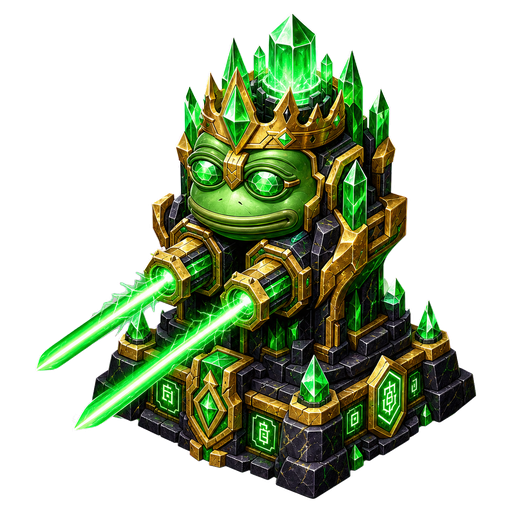
Shard Slow
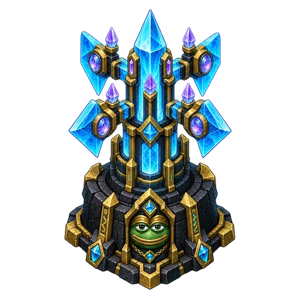
Relic Cannon
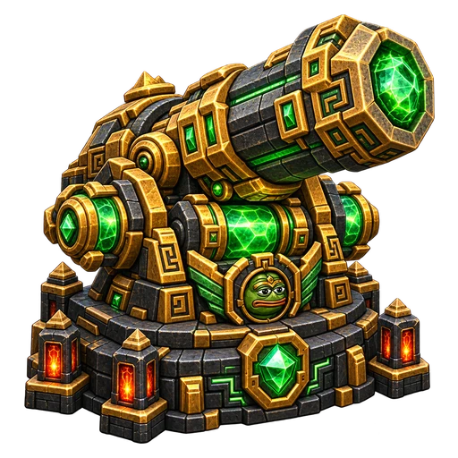
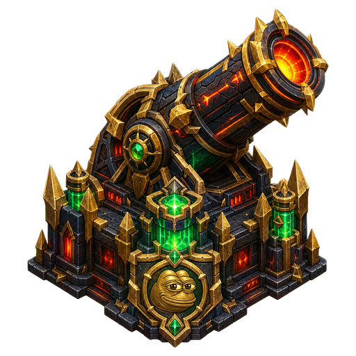
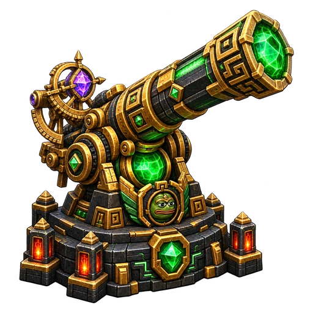
Pepe Mage
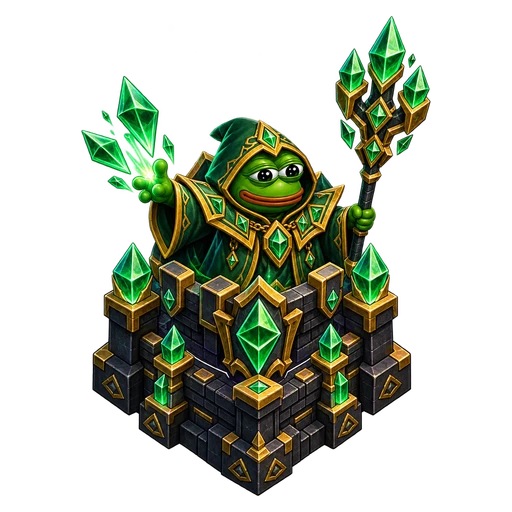
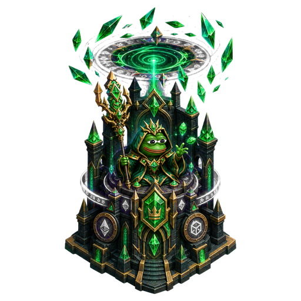
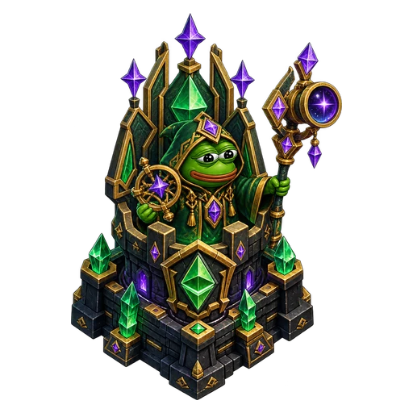
Pepe Archer
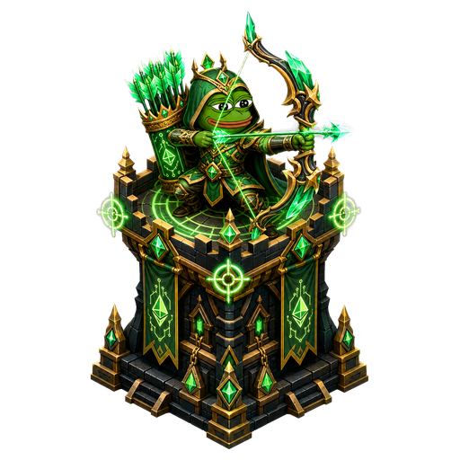
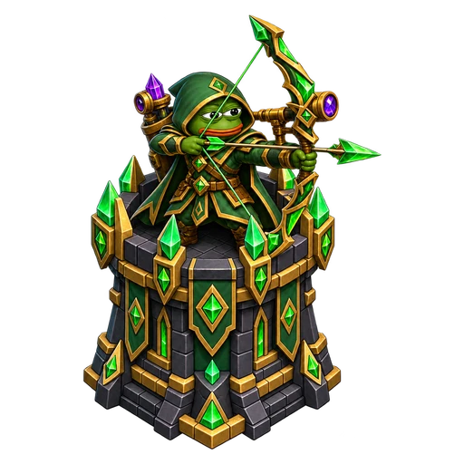
Pepe Alchemist - playable forms

Relic base - 100 HP objective
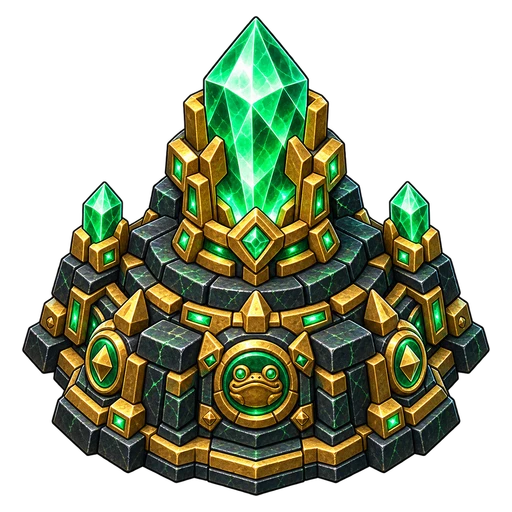
At the visible path endpoint. Breaches reduce health; zero ends the defense. The health bar, damage flash and low-health cracks remain visible in play.
Pepe Alchemist
Crack armor. Set up the kill.
A chemical-support defender for armored goblins. Its amber-green flask weakens armor briefly so nearby damage towers can finish the target.
Goggles, apron, condenser and potion vessels distinguish it from the hooded Mage. The jade-and-gold lab turret keeps it in the same roster.
| Base specification | Starting point for testing |
|---|---|
| Build cost | 135 defense shards |
| Attack | 15 damage; 0.95s base interval (0.88s at level 1); 150 range; one target |
| Armor weakening | Reduce ordinary armor by 10 percentage points for 2 seconds; bosses by 5 points. Refresh duration without stacking. No effect below zero armor. |
Three upgrade paths
| Track | Role | Tier names 1 - 5 |
|---|---|---|
| Volatile Brews | Stronger flask impacts, then a small splash burst. | Hot Mixture / Concentrated Acid / Shatter Flask / Crown Retort / Dragonfire Tonic |
| Corrosive Catalyst | Longer and stronger armor weakening, with separate boss limits. | Etching Agent / Acid Bath / Armor Solvent / Royal Reagent / Philosopher's Venom |
| Surveyor's Lab | Long-range support and better effect uptime. | Measuring Glass / Distant Delivery / Surveyor's Retort / Farwatch Lab / Emerald Observatory |
Playable defender: 135 defense shards, timed armor weakening and all three 5/2/0 upgrade paths, using the same move/sell rules. Special tiers add 2 armor-reduction points (1 boss point) and 0.4 seconds per tier. Volatile Brews tiers 3-5 add 24/36/48 splash. Values remain provisional pending human campaign playtesting. No income generation, permanent armor changes or additive stacks.